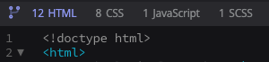
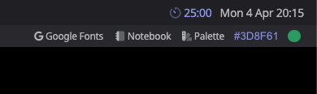
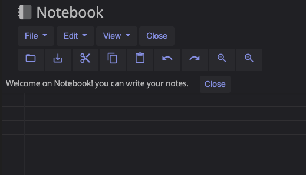

Docs
Documentation of the editor functions.
Branch Tab
You can create your project by dividing the HTML code from the CSS and JavaScript. By switching from one tab to the other, the editor will automatically compile the work done so far to update the preview. On each tab there is the number updated to the last compilation of the written lines of code.

Tag Autocomplete
Auto-completion function of HTML tags, each open tag will be closed automatically helping you in writing the code, also there are suggestions at the opening of the tags for all elements of the code.

Full Screen Function
Editor Pro is designed to take advantage of the workspace as much as possible, by choosing the Full screen function you maximize the coding area. To exit the full screen mode and return to the original position just press the ESC key.
Search and Replace Mode
Ctrl-F / Cmd-F :Start searching, Ctrl-G / Cmd-G:Find next, Shift-Ctrl-G / Shift-Cmd-G:Find previous, Shift-Ctrl-F / Cmd-Option-F:Replace, Shift-Ctrl-R / Shift-Cmd-Option-F: Replace all, Alt-F Persistent search (dialog doesn't autoclose, enter to find next, Shift-Enter to find previous) Alt-G:Jump to line.
The Pomodoro Function
The Pomodoro technique is a time management method developed by Francesco Cirillo in the late 1980s. The technique uses a timer to divide the work into intervals, traditionally 25 minutes long, separated by short breaks. Each interval is known as a "tomato", referring to the shape of the tomato-shaped kitchen timer that Cyril used when he was a college student.
This function is present with Typo Editor Pro and it is necessary to allow notifications to the browser for complete operation.

Palette and ColorPicker
Palette generation function for web designer work and ColorPicker tool for color sampling across the screen.

Notebook tools
Notebook is a full-featured text editor, which allows you to write your own design notes. You can save your notes or import projects to keep in memory.
